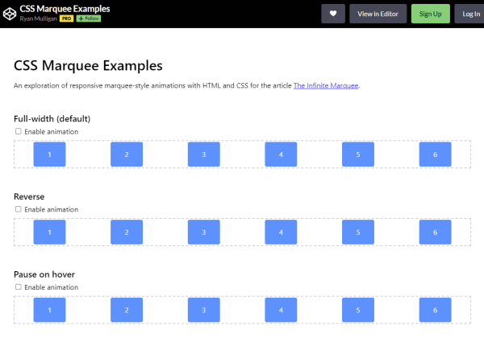
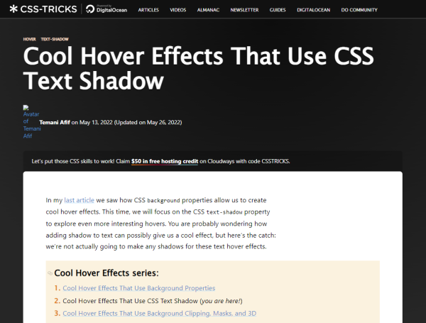

Discoveries #20 - CSS & UI
Web interfaces are unthinkable without CSS. It has its pitfalls, but when used correctly it’s damn powerful. It’s always incredible what developers do with it. This month’s Discoveries is about the basics and the amazing.
- My Custom CSS Reset
- Defensive CSS
- 10 Useful CSS Tricks for Front-end Developers
- Animated Star Rating
- CSS Marquee Examples
- CSS Rolling Text
- Cool Hover Effects That Use CSS Text Shadow
- Solving 'The Dangler' Conundrum with Container Queries and :has()
- Conditionally Styling Selected Elements in a Grid Container
- Intersection Observer Scrolling Effects
My Custom CSS Reset
by Josh Comeauhttps://www.joshwcomeau.com/css/custom-css-reset/
Browsers behave differenly out of the box regarding CSS. Therefore it is always advisable to have a CSS reset. Josh shows us his approach. He also inspired Elly to her Gist.
Defensive CSS
by Ahmad Shadeedhttps://defensivecss.dev/
Ahmad is a master of CSS and one of his concerns, which he also points out repeatedly in his blog, is to use styles defensively. He has now made his own website out of this.
10 Useful CSS Tricks for Front-end Developers
by Alex Ivanovshttps://stackdiary.com/useful-css-tricks/
Alex has some useful tips on writing better and smart CSS code. I have to try Shadow for transparent images as soon as possible …
Animated Star Rating|IMGFILE
by Jon Kantnerhttps://codepen.io/jkantner/pen/BarvVNa
Star ratings are everywhere because they encourage the user to interact with the website and may give the following important clues about how good the product is. Jon has taken them to the next level visually with his animations.
CSS Marquee Examples
by Ryan Mulliganhttps://codepen.io/hexagoncircle/full/eYMrGwW
Marquee visualizations were all the rage in the 90s, but they still have their place today and are easier to implement than ever before.
CSS Rolling Text
by Marcello Lopeshttps://codepen.io/marcell0lopes/pen/oNemQmB
You have to tease something with more than one verb? Try this simple solution from Marcello on scrolling text with pure CSS.
Cool Hover Effects That Use CSS Text Shadow
by Temani Afifhttps://css-tricks.com/cool-hover-effects-that-use-css-text-shadow/
Hover effects are only useful on computers with mouse support, but how cool you can design them Temani shows us on CSS Tricks.
Solving 'The Dangler' Conundrum with Container Queries and :has()
by Dave Ruperthttps://daverupert.com/2022/07/solving-the-dangler-conundrum-with-has-and-container-queries
Grids are super cool, but there is the problem how to style leftovers that doesn’t fit in the matrix. Having a 3 column grid and 12 elements? Fine. But what is with the 13th element? Dave shows us how to deal it it in CSS.
Conditionally Styling Selected Elements in a Grid Container
by Preethihttps://css-tricks.com/conditionally-styling-selected-elements-in-a-grid-container/
Elements in a grid have their style. Period. … Wait, no! It is possible to style an element regarding to its neighbour, as shown in this article, by a clever using of :nth-of-type.
Intersection Observer Scrolling Effects
by Jheyhttps://codepen.io/jh3y/pen/xxWyEBQ
Codepen’s user JHey shows us how to animate elements in 5 different ways on scrolling. Pretty neat…
You can interact with this article (applause, criticism, whatever) by mention it in one of your posts, which will be shown here as a Webmention, or by leaving a good old comment with your GitHub account.
Webmentions
No Webmentions yet...
In case your blog software can't send Webmentions, you can use this form to submit me a mention of this article...


Comments